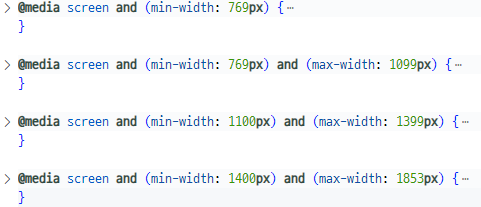
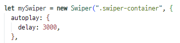
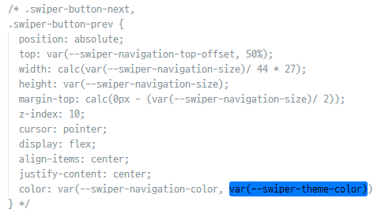

video 영역
2024.06.04 ~ 2024.06.14
LALASWEET
반응형 웹 리디자인 & 퍼블리싱
개인 프로젝트
- # FIGMA
- # JavaScript
- # jQuery
- # MediaQuery
- # GSAP
- # SWIPER
Situation
- 기존 라라스윗의 홈페이지는 다양한 디바이스 사용자를 고려하지 않은 적응형 웹사이트
- 라라스윗 브랜드만의 개성을 살리지 못한 디자인이라는 생각이 들었음
Task
- 반응형 웹 구현을 통해 반응형 웹 작업에 대한 이해를 높임
- 브랜드 아이덴티티를 파악하고 개성을 드러낼 수 있는 디자인으로 변경
- 스크롤에 따른 애니메이션 효과를 위해 GSAP의 scrollTrigger 플러그인 사용
Style Guide
KEYWORD
- # 깔끔한
- # 트렌디한
- # 개성있는
COLOR
- #065EA2
- #4BACDB
- #FFCE6C
- 로고 컬러를 사용하여 브랜드 아이덴티티를 살렸습니다.
- 시원한 느낌을 주는 파란색과 노란색을 함께 사용하여 아이스크림을 연상시켰습니다.
FONTS
- 메인 영문 폰트
- Mango Grotesque Black
- Mango Grotesque Extra Bold
- Mango Grotesque Bold
- Mango Grotesque Semi Bold
- 메인 한글 폰트
- 지마켓 산스 Bold
- 지마켓 산스 Medium
- 지마켓 산스 Light
- 서브 한글 폰트
- 프리텐다드 Medium
- 프리텐다드 Regular
Issue & Resolving
1. 사이즈가 큰 폰트를 사용했을 때, 윈도우 크기를 축소해도 레이아웃이 망가지지 않게 하려면 어떻게 해야 할까?
→ 미디어 쿼리를 세밀하게 나눠 폰트 사이즈를 설정함
2. 사용자가 스와이퍼 영역임을 쉽게 인식하게 하려면 어떻게 해야 할까?
→ SWIPER 옵션 중 autoplay 기능을 사용해 3초마다 다음 슬라이드로 넘어가게 함
3. mix-blend-mode 사용 시 내가 설정하지 않은 컬러로 보이는데 어떡하지?
→ 반전된 컬러를 설정하여 반전되었을 때 기존에 사용하고자 했던 컬러가 보이도록 함
4. SWIPER의 prev, next 버튼의 좌우 위치가 바뀌었는데, 어떤 코드를 넣어도 위치가 바뀌지 않는데 어떡하지?
→ 개발자 모드를 통해 swiper-bundle.css의 버튼 스타일이 문제임을 확인해 삭제함
Review
✓ 아쉬움
- 전체적인 분위기에 어울리는 이미지와 영상을 사용하고 싶었습니다. 그러나 선택의 여지가 제한적이었고, 이미지는 저화질뿐이어서 아쉬웠습니다.
- Pagination이 없는 스와이퍼라 사용자가 쉽게 인식할 수 있도록 양쪽에 이전 및 다음 이미지가 보이도록 구현하고자 했습니다. 그러나 모바일 버전에서 문제가 생겨 구현하지 못한 점이 아쉬웠습니다. 수료 후 시간적 여유가 생긴다면 꼭 다시 수정해 보고 싶습니다.
✓ 성과
- 기획한 목표를 완벽하게 달성하지는 못했지만, 정해진 시간 안에 스스로 기획, 디자인, 퍼블리싱까지 완료할 수 있어서 뿌듯했습니다.
- 반응형 웹이라서 하나의 코드 수정으로 다른 디바이스에서 문제가 발생하는 경우가 자주 있었지만, 포기하지 않고 끝까지 문제를 해결하기 위해 노력했습니다
✓ 배운 점
기획부터 디자인, 퍼블리싱까지 혼자서 진행해야 했기 때문에 처음에는 조금 막막했습니다. 그러나 천천히 계획을 세우고 차근차근 진행하다 보니, 혼자만의 노력으로 결과물을 완성할 수 있어서 매우 뿌듯했습니다.
이번 프로젝트를 진행하면서 mix-blend-mode 코드에 대해 새롭게 알게 되었습니다. 겹쳐지는 콘텐츠에 따라 색상이 바뀌는 것이 매우 매력적이라고 느꼈습니다. 다음에는 다른 값으로 이 코드를 사용해 보고 싶습니다.
또한, slidesPerView, spaceBetween, breakpoints 등 새로운 SWIPER 플러그인 옵션에 대해 새롭게 배우게 되었습니다. 이번에는 사용하지 못한 것이 아쉽지만, 추후에 프로젝트를 수정할 기회가 생긴다면 꼭 이 옵션들을 활용해 보고 싶습니다.
처음으로 혼자 진행한 반응형 웹 구현 프로젝트라 아쉬운 점이 많습니다. 결과물이 완벽하지는 않지만, 이번 프로젝트를 통해 쌓은 경험을 바탕으로 성장하고, 다음 프로젝트에서는 좀 더 완성도 높은 반응형 웹을 제작하고 싶습니다.